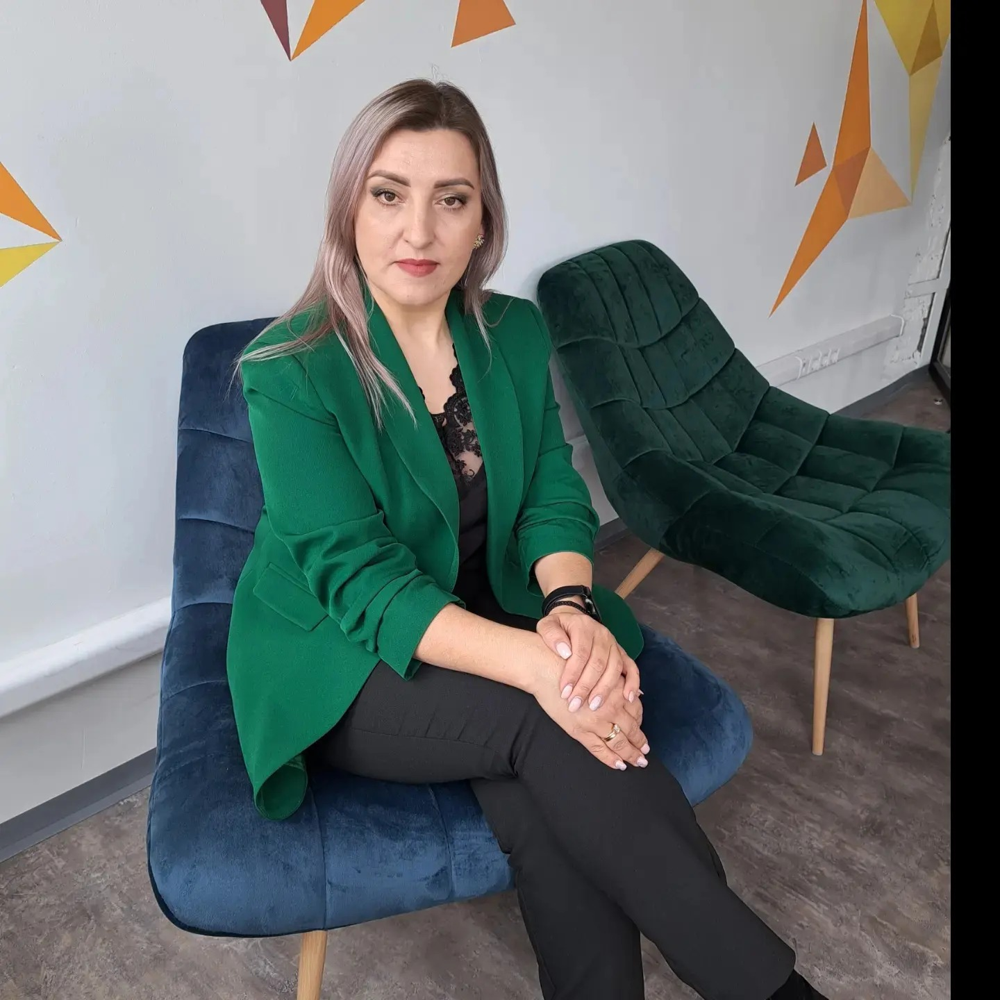
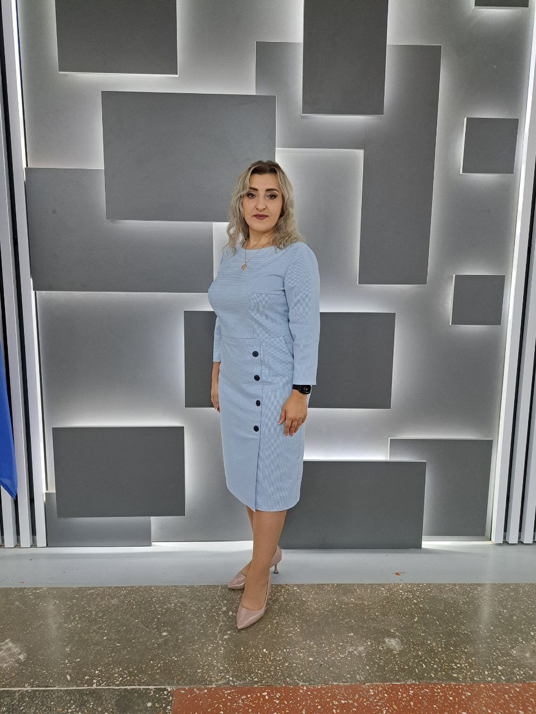
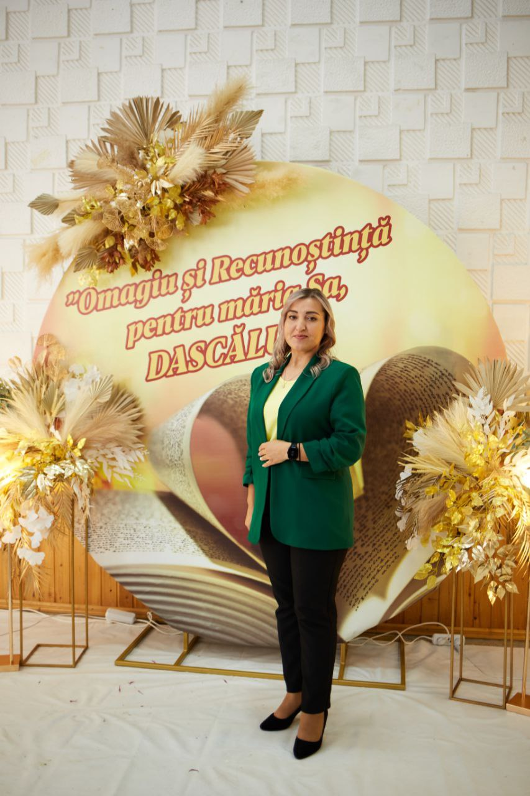
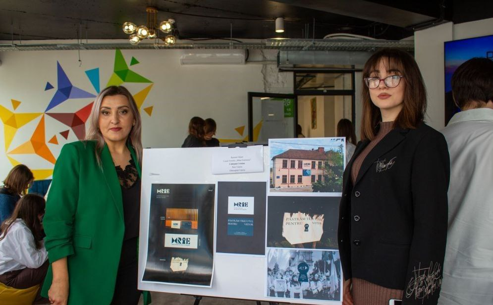

Calmațui Cristina
|
Programator
Româna, Rusa cristinacalmatui.38@gmail.com +37368777730 |
Sunt profesoară de informatică și sunt pasionată de lumea tehnologiei încă de când eram adolescentă. Această curiozitate m-a condus către alegerea unei profesii din domeniul informaticii. Dorința de a împărtăși cunoștințele și experiența mea a dus către decizia de a deveni profesoară de informatică. Am început să predau la IPLT„Mihai Eminescu” din orașul Fălești și am descoperit o pasiune nouă în transmiterea cunoștințelor mele elevilor. Îmi place să îi încurajez să exploreze domeniul vast al informaticii, să îi inspir să gândească critic și să găsească soluții inovatoare la problemele tehnologice. În calitate de profesor de informatică, mă strădui să creez un mediu de învățare interactiv și captivant, unde elevii să se simtă motivați să își dezvolte abilitățile tehnice și creativitatea. În afara sălii de clasă, sunt pasionată de cercetare și inovație. Îmi place să rămân la curent cu cele mai recente tendințe și descoperiri din domeniul informaticii, iar apoi să împărtășesc aceste cunoștințe în cadrul lecțiilor mele. |
|  |  |  |  |
Experiența de lucru
Coordonator de proiect
August 2021 - PrezentCoordonator de proiect în cadrul proiectului Tekwill în Fiecare Școală
Profesoară de informatică
Septembrie 2020- PrezentActivez în calitate de profesoară de informatică în IPLT„Mihai Eminescu”
Profesoară de Design grafic
Septembrie 2021 - PrezentActivez în calitate de profesoară de design grafic în IPLT„Mihai Eminescu”
Educație
Studii de licență
Septembrie 2016 - Iunie 2020Studii în licență profesor de informatică